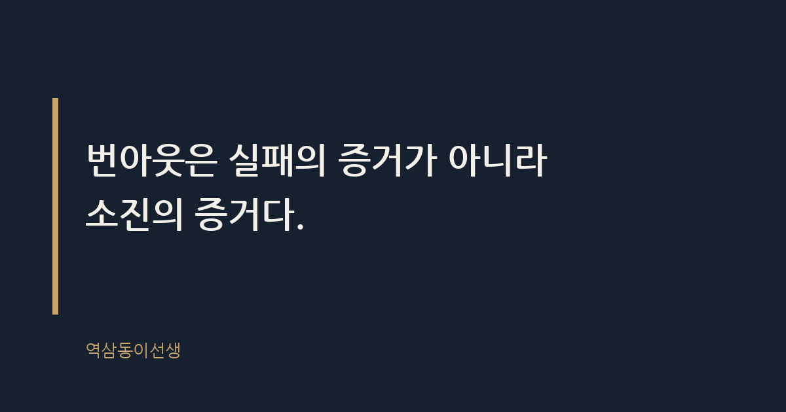

주제 직장인 번아웃을 미리 알아채는 신호 (evergreen / office)
제목 후보
메타 설명 번아웃은 어느 날 갑자기 터지지 않는다. 몇 달 전부터 몸과 태도로 보내는 신호와 자가진단 체크리스트를 실제 장면으로 정리했다.
라벨 번아웃, 번아웃증상, 직장인번아웃, 조용한퇴사, 워라밸, 직장스트레스, 번아웃신호체크리스트, 번아웃초기증상, 회사에서지치는이유, 번아웃자가진단
실용 자산 체크리스트 — 번아웃 신호는 자가진단이 핵심 검색 의도이므로, 순서대로 체크하는 실용 리스트를 본문에 직접 넣었다
발행 전 팩트체크
이미지 (Blogger 편집기에 드래그해 넣으세요)
도입부 사진 · ⓒ Pexels / Pexels

몇 해 전 마케팅본부에서 함께 일하던 후배가 있었다. 신제품 론칭 회의 때마다 제일 먼저 손을 들고, 아이디어를 쏟아내던 사람이었다. 그런데 어느 분기부터 메신저 답장이 반나절씩 늦어지기 시작했다. 회의에서는 노트북 화면만 보고 말이 없었다. 다들 "요즘 많이 바쁜가 보다" 하고 넘겼다. 석 달 뒤 그 후배는 사직서를 냈다. 사유는 번아웃이었다.
번아웃은 어느 날 갑자기 터지지 않는다. 화산이 분출하기 전 땅이 미세하게 떨리듯, 몇 달 전부터 몸과 태도로 신호를 보낸다. 문제는 그 신호가 '게으름'이나 '컨디션 난조'로 오해받는다는 데 있다. 신호를 신호로 읽는 눈이 있어야, 늦기 전에 손을 쓸 수 있다.
번아웃이란 장기간 해소되지 않은 업무 스트레스로 인해 신체적, 정서적 자원이 바닥난 상태를 뜻한다. 하루 푹 자면 풀리는 피로와는 결이 다르다. 세계보건기구(WHO)는 2019년 국제질병분류(ICD-11)에 번아웃을 질병이 아닌 '직업적 현상'으로 등재했다. 쉬면 낫는 개인의 문제가 아니라, 일하는 방식과 환경이 만들어내는 현상이라고 공식적으로 못 박은 셈이다.
심리학자 크리스티나 매슬랙은 번아웃을 세 가지 축으로 설명한다. 정서적으로 소진되는 것, 일과 사람에 냉소적이 되는 것, 그리고 '내가 잘하고 있다'는 효능감이 떨어지는 것이다. 이 세 가지가 동시에 나타날 때 번아웃이라 부른다. 한 가지만 겹치면 그냥 지친 날이고, 세 가지가 겹쳐 몇 주 이상 가면 신호로 읽어야 한다.
번아웃이 개인의 의지 문제가 아니라는 점은 중요하다. 의지 부족으로 치부하면 해법은 늘 "더 버텨라"로 귀결된다. 하지만 환경이 원인이라면, 해법은 그 사람의 근성을 탓하는 게 아니라 업무 구조를 들여다보는 데서 출발해야 한다.
번아웃과 슬럼프는 자주 헷갈린다. 슬럼프는 원인이 뚜렷하고 기간이 짧다. 큰 프로젝트 하나를 끝내고 며칠 멍해지는 건 슬럼프에 가깝다. 번아웃은 다르다. "왜 힘든지 콕 집어 말하기 어렵다"는 게 특징이고, 몇 주가 지나도 회복되지 않는다.
마케팅본부에서 대형 캠페인이 끝나면 다들 한 사흘은 늘어진다. 그런데 보통 일주일이면 눈빛이 돌아온다. 그 후배는 캠페인이 끝난 지 두 달이 지나도 눈빛이 돌아오지 않았다. 그때 알아챘어야 했는데, 다들 "원래 저 친구 느긋하잖아"라고 넘겼다.
옆에서 오래 지켜본 바로는, 번아웃은 "일을 못 하게 되는 것"으로 시작하지 않는다. 오히려 초반엔 더 열심히 하는 것처럼 보이는 구간이 있다. 야근이 늘고, 주말에도 메일을 확인한다. 그런데 결과물의 질은 조금씩 떨어진다. 이 과잉보상 단계를 '열정'으로 착각하는 게 가장 흔한 실수다.
조금 더 지나면 태도가 달라진다. 늘 먼저 의견을 내던 사람이 조용해진다. 회의에서 눈을 맞추지 않는다. 메신저 답장 속도가 평소보다 눈에 띄게 느려진다. 예전 같으면 10분 걸리던 일에 1시간이 걸린다. 본인은 "요즘 집중이 잘 안 된다"는 말을 자주 한다. 작은 실수가 반복되는데, 본인도 왜 틀렸는지 설명하지 못한다.
마지막 단계에선 사람 자체와 거리를 둔다. 점심 약속을 피하고, 메신저 알림을 꺼둔다. 일 얘기만 나오면 피곤한 표정을 숨기지 못한다. 이때쯤이면 본인도 "그만두고 싶다"는 생각을 꽤 자주 한다. 앞서 말한 후배도 마지막 한 달은 거의 이 단계였다.
그 후배의 경우, 처음 신호는 뜻밖에도 '칼퇴'였다. 늘 야근하던 사람이 어느 날부터 칼같이 퇴근했다. 다들 "좋은 습관 들었네"라고 농담했다. 사실은 에너지가 없어서 야근할 힘조차 남지 않은 거였다. 열심히 안 하는 것처럼 보이는 게, 가장 늦게 알아채는 신호였다.
번아웃은 보고서 문장에도 티가 난다. 원래 "이렇게 하면 좋겠습니다, 제 생각은 이렇습니다"처럼 의견이 담긴 문장을 쓰던 사람이, 어느 순간부터 "말씀하신 대로 진행하겠습니다"만 반복한다. 자기 의견을 넣는 게 피곤해진 것이다. 메일 서두의 인사말도 짧아진다. "안녕하세요, 잘 지내시죠"가 사라지고 용건만 남는다.
그 후배의 보고서도 그랬다. 예전엔 대안을 세 개씩 붙여오던 사람이, 나중엔 "검토해주시면 그대로 진행하겠습니다"는 문장만 반복했다. 말수가 준 게 아니라, 생각을 꺼내는 데 쓸 에너지가 바닥난 거였다. 보고서 톤이 갑자기 수동적으로 바뀌었다면, 업무 능력이 아니라 소진을 의심해볼 일이다.
번아웃은 머리보다 몸이 먼저 안다. 매일 두통약을 달고 살거나, 소화가 안 돼서 점심을 거르는 일이 잦아진다. 밤에 늦게 자는 것도 아닌데 아침에 일어나기가 유독 힘들어진다. 어깨와 목 통증으로 마사지를 받아도 그때뿐이다.
그 후배도 그 분기에 감기를 세 번 앓았다. 병원에서는 매번 "특별한 이상은 없다, 스트레스성인 것 같다"는 말을 들었다고 했다. 몸이 보내는 신호를 "요즘 환절기라 그런가 보다"로 넘기면, 신호는 점점 더 세게 온다.
아래 항목 중 최근 두 달 사이 해당되는 게 몇 개인지 세어본다. 4개 이상이면 이미 몸이 신호를 보내고 있는 상태라고 봐야 한다.
번아웃 신호를 알아채기 어려운 이유는 초기 단계의 행동이 오히려 성실함으로 보이기 때문이다. 야근이 늘고 메일 답장이 많아지는 걸 관리자는 '열심히 하는구나'로 읽는다. 결과물의 미세한 품질 저하는 숫자로 잘 드러나지 않는다. 그래서 조직은 사람이 완전히 지쳐 쓰러지거나 퇴사 의사를 밝힌 다음에야 문제를 인식한다.
인사 시즌 면담에서 종종 보는 장면이 있다. "그만두겠다"는 말을 듣고 나서야 "요즘 힘들었냐"고 묻는다. 신호는 몇 달 전부터 있었는데, 평가지표에는 잡히지 않았던 것이다. 성과주의 문화에서는 '얼마나 해냈는가'만 보고 '어떻게 버티고 있는가'는 묻지 않는다. 결과만 보는 구조에서는 과정의 소진이 보이지 않는다.
평가 시즌에 "왜 저 사람 실적이 떨어졌지"라고 묻기는 해도, "저 사람 괜찮나"라고 묻는 경우는 드물다. 숫자로 안 잡히는 건 관리하지 않는 조직 문화 탓이 크다. 번아웃은 분기별 숫자로 드러나기 전에, 표정과 말투로 먼저 드러난다.
번아웃 위험이 유독 높은 업무 환경이 있다. 심리학자 매슬랙은 업무량, 통제감, 보상, 공동체, 공정성, 가치관이라는 여섯 가지 영역에서 개인과 조직 사이에 불일치가 클수록 번아웃 위험이 커진다고 설명한다. 책임은 큰데 결정권이 없는 자리, 메신저 알림에 즉시 답해야 하는 상시 대기 문화가 대표적이다.
고객을 직접 상대하는 직군, 수시로 평가받는 조직일수록 번아웃이 빨리 온다. 공통점은 '내가 이 일의 속도와 방식을 정할 수 없다'는 무력감이다. 그 후배가 맡았던 자리도 그랬다. 윗선 결정이 수시로 바뀌는 프로젝트를 혼자 감당하는 자리였다.
본인이 체크리스트에서 여러 항목에 해당된다면, 거창한 결심보다 작은 기록부터 해보는 게 효과적이었다. 일주일 동안 "오늘 유독 힘들었던 순간"을 한 줄씩 적어보면 패턴이 보인다. 특정 회의, 특정 업무, 특정 사람 앞에서 반복해서 소진된다면 그게 구조적 원인이다. 연차를 하루 쓰는 것보다, 그 패턴을 끊는 게 먼저다.
기록을 2주쯤 하다 보면, 유독 힘든 요일이나 시간대가 보인다. 어떤 사람은 매주 월요일 오전 회의 직후가 제일 힘들다고 했고, 어떤 사람은 특정 상사와의 보고 직전이 제일 힘들다고 했다. 패턴이 보이면, 그 구간만 조정해도 숨통이 트인다.
관리자라면 1on1에서 "요즘 일 어때요" 대신 "요즘 뭐가 제일 피곤해요"를 물어보는 게 낫더라. 전자는 업무 보고로 흘러가고, 후자는 사람 얘기로 이어진다. 회복이 빠른 사람들을 지켜보면, 신호를 일찍 말할 수 있는 상대가 조직 안에 한 명은 있었다. 그 한 명이 상사일 때도 있고, 옆자리 동료일 때도 있었다.
번아웃은 실패의 증거가 아니라 소진의 증거다. 열심히 안 해서 생기는 게 아니라, 너무 오래 열심히 해서 생긴다. 그 후배를 보내고 나서야 깨달았다. 조금 더 일찍 물었어야 했다는 후회는, 쓸쓸하면서도 오래 남았다.
Q. 회의에서 말수가 눈에 띄게 줄었던 동료, 혹은 본인이 그랬던 적 있으신가요?